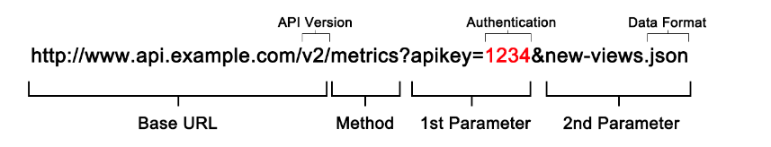

JS Core III - 2
Learning Objectives
- The learner should understand what the acronym API means
- The learner can define what an API's purpose is and why it is useful
- The learner should be able to edit the structure of a API URL and to change the data retrieved from the server
- The learner should be able to define what a
Promiseis - The learner should understand what
fetchis and what it is used for - The learner should be able to use
fetchto retrieveJSONfrom an API - The learner should be able to parse the
JSONand extract data from it - The learner should be able to use
DOMmanipulation to add content to theDOM - The learner should understand
window.onloadanddocument.onloadand should be able to assign functions to run at specific life cycle events
1. How the web works - quick recap
In this session we will look at how computer talk to each other using the web.
At the core of the web is the URL, which stands for Uniform Resource Locator. We use the term resource to mean anything that a server might return such as webpage, CSS, JavaScript, image, data etc. A good way to think of a URL is as an address. It allows us to refer to webpages, images, data etc that is stored on servers elsewhere.
Methods
The main methods used to send requests on the web are GET and POST. However, later in the course when we look at building APIs using Node we will also look at other methods such as PUT and DELETE.
A GET method is a way of asking a server for a webpage, resource or a piece of data. For example, when we type a URL into a browser and submit it. The browser will send a GET request.
A POST method is used to send data to a server.
The main difference between GET and POST is that a POST method has a body, that is it can contain some data that we are sending. Whereas a GET does not have a body since we use it to request data.
Headers
Each request and response sent has meta data, information about the data, at the beginning called a header. The header contains information such as a
- status code indicating whether a request was successful
- content type which indicates what the request or response contains
as well as lots of other things we won't cover here
Status codes
Each response returned needs to contain a status code which tells the client whether the request was successful. If the request succeeded the response code will be 200. If the resource you tried to access was not found the response code used is 404.
Some status codes you may have come across before are:
200ok. Request was successful301moved permanently. Used to redirect request when moved permanently401Unauthorised. User credentials were not supplied404Not found500Internal server error
The response codes can be grouped into categories
- 1xx: Informational
- 2xx: Success
- 3xx: Redirection
- 4xx: Client Error
- 5xx: Server Error
If you want a fun look at HTTP codes, take a look at https://httpstatusdogs.com/ or https://http.cat/ if you are cat person. For a technical perspective take a look at https://en.wikipedia.org/wiki/List_of_HTTP_status_codes.
Content type
When sending data across the web, we need to specify in the header what the request or response contains. To do that, the content-type header is used. That way the receiver knows what to do with the data received.
Common content types include
text/html- HTML web pagetext/css- CSSimage/jpeg- JPEG imageapplication/javascript- JavaScript codeapplication/json- JSON data
Exercise
In Slack post answers to the following
- What can HTTP headers contain?
- What is the purpose of status codes?
- What can an HTTP message contain?
2. What are APIs and how to interact with them
Explanation
- API stands for
Application Programming Interface - APIs are created by providers and used by consumers
- It is a specific part of a larger system that can be contacted by other systems, for example from the internet.
- When we connect to an
APIwe say that we are connecting to anEndpoint - Some well-known APIs are Facebook APIs, Twitter APIs, Maps APIs and many many more
- In particular, an API doesn't care what language or technology is used in the consumer or the provider
An API is a set of rules that allow programs to talk to each other. The developer creates the API on the server and allows the client to talk to it. An example of a server is the application on a computer hosting a website and an example of a client is the browser on the phone trying to access the website.
Why do we need APIs?
Imagine that I am a big social network and I want to give developers all over the world access to the data on the people on my website.
What are some problems that I would have with sharing my data with everyone?
- Some of the information that I have is public (for example, peoples names) whilst other information I have is private (for example, email addresses). I want to make sure that I only ever give developers access to peoples names but never to their email addresses - otherwise they could send them spam email.
- I want to make sure that when developers ask for my data I can control who has access to it. I like that my users data is being used to make their lives better but I don't like it when companies try to sell them new stuff they don't need.
- Some developers might want to change some of the users details on my social network and this would get very messy quickly if people where allowed to change whatever they wanted
An API is a special type of program what acts as a gatekeeper to all of this information. Having an API means that I can control which information is shared about my users and who it is shared with. Perfect!
Types of APIs:
- Private: for employees only under a company network for internal use.
- Semi-private: for clients who paid for the API.
- Public: for everyone on the web (but may or may not need an account to use).
Examples
Here is the API endpoint for Transport For London
The data from this endpoint will be used by many apps that you use every day - Google Maps and Citymapper to name two.
This endpoint will get location of all of the Bikepoints in London.
https://api.tfl.gov.uk/BikePoint
That's a lot of Bikes! It would be better if we could search for a location. Luckily this API let's us search for places.
https://api.tfl.gov.uk/BikePoint/Search?query=Clerkenwell
This API also has lots of other endpoints that we can use to get other data. For example, lets find the Air Quality of London.
https://api.tfl.gov.uk/AirQuality
As you can see the URL changes the data that we get from the API. This can be broken down like this

Exercise
Task (5 mins):
Let's use the TFL API to get data about the London Underground
https://api.tfl.gov.uk
1. Which endpoint would you use to find out if there is a disruption on the 'central' line? 2. Does the 'central' line have a disruption right now? Name another line that has a disruption on it.
Hint: Use your browser to access the endpoints
Recap
Question:
Which of the following statements below about APIs is false?
A) Public APIs can be accessed by anyone on the Internet.
B) You must use Javascript to access an API.
C) APIs can control access to data or features of an application.
D) You can change data via an API.
Question:
Give an example of a company that uses an API to allow access to their data.
3. How to use fetch to do network requests
Explanation
- Fetch is a function to request from other places on the web
- Fetch is defined in the browser which means it can be used without using an external library (
window.fetch) - Fetch is available in nearly all browser but it's good to check which ones it won't work in
- We can use this website to help us - caniuse.com)
- Fetch API documentations by Mozilla link
How does fetch work?
Fetch uses a JavaScript pattern called "Promises" which has a very specific structure.
You can think of a Promise as you would think of a promise you make to another person - you make a promise that something will happen in the future. For example - I promise to call you later, I promise to go to the shops and buy milk later.
Using Promises allows us to schedule functions to be called after some asynchronous code finishes running. We can specify different functions depending on whether the asynchronous code was successful or ran into an error.
Promises can make it easier to split our code into small functions and make code easier to read. They also make it easier to handle errors.
In this example we
- Get the
Promisethat we will get the milk from the shops (this could take a long time so it's good that it's aPromise!) - When the milk has arrived from the shop
thenI should drink it andreturnthe bottle so I can do something else with it - When I've drank the milk
thenI should recycle the bottle - If anything goes wrong with those steps I should
catchthe error andwarneveryone what happened
Example
getMilkFromShops
.then((milk) => {
console.log(`I've got the milk`);
milk.drink();
return milk.bottle;
})
.then((bottle) => {
console.log(`I'm going to recycle the bottle`);
bottle.recycle();
})
.catch((error) => console.warn("Oh no, I dropped the milk"));
Example 1
Live Coding Exercise
Let's step through how the Fetch function is used and what it is comprised of
//Retrieve the JSON
fetch("https://cat-fact.herokuapp.com/facts")
// Get the response and extract the JSON
.then(function (response) {
return response.json();
})
// Do something with the JSON
.then((headlines) => {
console.log(headlines);
})
// If something goes wrong
.catch((error) => console.log(error));
Example 2
Live Coding Exercise
Wouldn't it be cool to make a new friend with just the click of a button?
Write a function that makes an API call using fetch to https://www.randomuser.me/api
- The function should make an API call to the given endpoint:
https://www.randomuser.me/api - Log the received data to the console
- Incorporate error handling
- Show how you can build a profile page for the user using the DOM
- Add a name
- Add a profile picture
- Add some styling using CSS
Error handling
We saw earlier that each HTTP response contains an status code which indicates if our request was successful or not. If the our request failed we usually want to handle it appropriately.
We can handle these errors gracefully in your code by checking the status and statusText value of the response:
fetch("https://httpstat.us/500")
.then((response) => {
if (response.status >= 200 && response.status <= 299) {
return response.json();
} else {
throw new Error(
`Encountered something unexpected: ${response.status} ${response.statusText}`
);
}
})
.then((jsonResponse) => {
// do whatever you want with the JSON response
})
.catch((error) => {
// Handle the error
console.log(error);
});
Recap
Task (5 mins):
Complete the rest of this code to connect to the following API: `https://dog.ceo/api/breeds/image/random`
fetch(_____)
.then(_____)
.then(body => console.log(body))
.catch(error => console.log(error));
Homework
Follow the steps and complete all the steps you can from the Weather Project